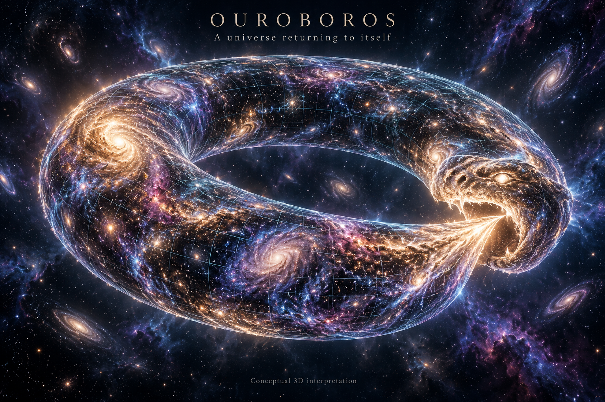

Alternating growth
Ok = [−ζ(s)]k O0
The state changes sign at every step. Because ζ(s) > 1, its magnitude grows: the original final equation does not close into a nonzero cycle.
|Ok| = ζ(s)k |O0|
MATTHEW CHENOWETH WRIGHT · MATHEMATICAL NOTE 01
An Ouroboros turns persistence into a cycle. Its expanding counterpart, Noroboro, turns repetition into growth. Here, the equations make the difference precise.

02 / THE MATHEMATICAL CORE
Fix integer steps k ≥ 0, a real series exponent s > 1, and a complex initial state. At each integer step, every exponential in the original Fourier sum equals one. The sum is therefore ζ(s), the Riemann zeta function.
Ok = [−ζ(s)]k O0
The state changes sign at every step. Because ζ(s) > 1, its magnitude grows: the original final equation does not close into a nonzero cycle.
|Ok| = ζ(s)k |O0|
Ôk = (−1)k Ô0
Divide the Fourier factor by ζ(s). At integer steps the resulting multiplier is −1. Magnitude is preserved, and two updates restore the initial state.
Ôk+2 = Ôk
The normalization changes the model. Its cycle theorem applies to integer steps; it does not automatically extend to arbitrary real times. The normalized discrete dynamics no longer depend on s.
03 / COMPARE THE DYNAMICS
Choose the series exponent and growth rate. Each curve starts from a unit initial magnitude. The vertical axis shows ln(|statek| / |state0|), so both ordinary and accelerating growth remain readable.
THE NOROBORO SOLUTION
Nk = (−1)k ζ(s)k eαk(k+1)/2 N0
The original multiplier eαk compounds at each step. Its accumulated exponent is quadratic, so α > 0 produces growth faster than an ordinary exponential. Normalization removes the ζ(s)k factor.
These signed values use real initial state 1. The chart above shows magnitude, so sign reversal is visible here.
| Step k | Original Ok | Normalized Ôk | Original Nk | Normalized N̂k |
|---|
Parameters are dimensionless. Lines connect discrete sample points for readability; they do not define continuous-time dynamics. The zeta value is computed numerically. Symbolic proofs and reproducible checks accompany the illustration.
04 / WHAT THE MATHEMATICS ESTABLISHES
The original recurrence grows. The explicitly normalized recurrence closes after two steps. The Noroboro exponent accumulates as k(k+1)/2.
The series is a polylogarithm specialization, its integer samples are ζ(s), and the corrected cycle is the familiar map z → −z.
Möbius topology, fractality, and physical or metaphysical conclusions require their own definitions, constructions, and evidence.
An indefinitely repeated orbit is different from an ordinary limit. A nonzero two-cycle never settles to one limiting value. This mathematical model also presupposes initial data; it does not decide whether absolute nonexistence is possible.
05 / FOLLOW THE ARGUMENT
The complete derivationAssumptions, exact solutions, proofs, and real-time limitations The consistency reviewFrozen criteria, negative results, and remaining obligations The original articlePreserved February 5, 2025 source, including claims revised here Reproducible verificationSeven numerical and boundary-check groups, with runnable sourceReference definitions: NIST DLMF · Polylogarithms and Riemann zeta function.